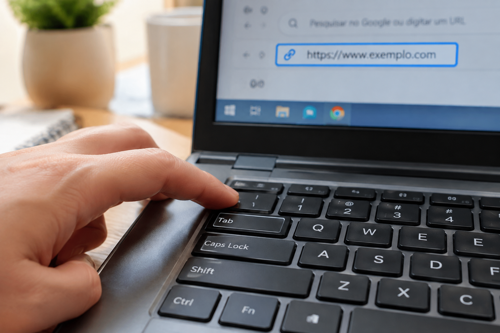
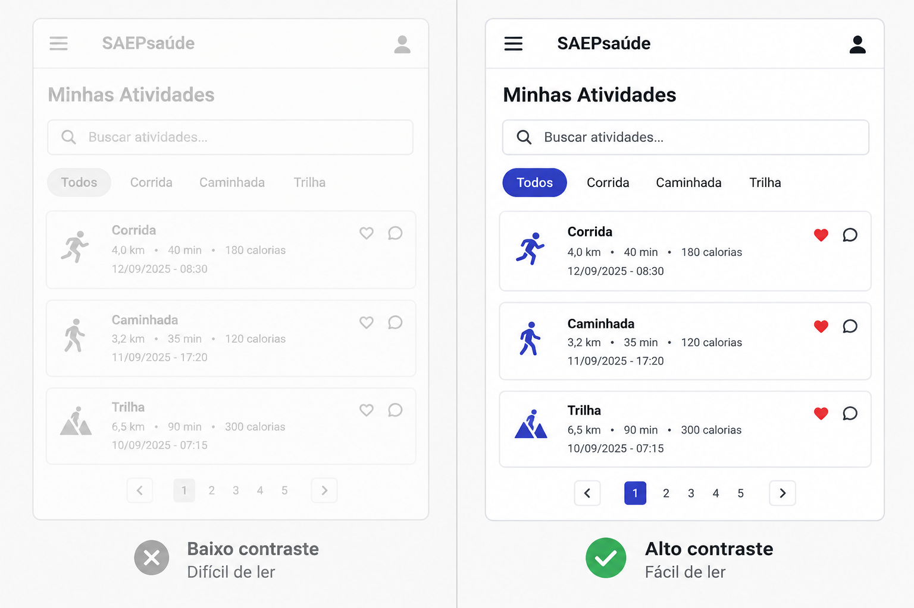
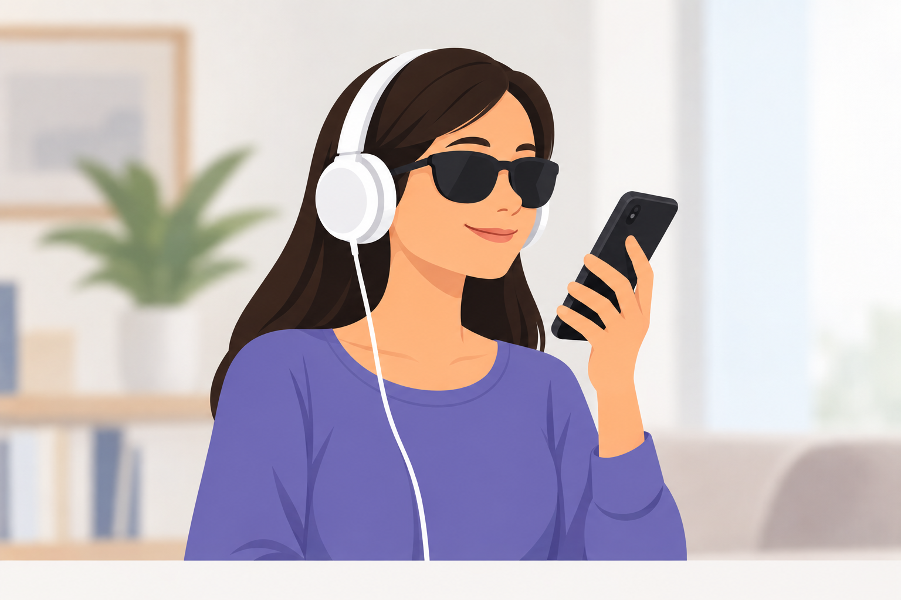

O que é acessibilidade digital?
Acessibilidade digital é o conjunto de práticas que garante que sites, aplicativos e sistemas possam ser usados por qualquer pessoa, incluindo quem depende de tecnologia assistiva para navegar. Isso envolve desde escolhas simples — como um bom contraste de cores e textos alternativos em imagens — até estruturas mais complexas, como uma navegação totalmente operável pelo teclado ou compatível com leitores de tela.
Diferente do que muita gente pensa, acessibilidade não beneficia só quem tem deficiência permanente. Uma legenda ajuda quem está em um ambiente barulhento. Um contraste alto ajuda quem está sob sol forte. Uma navegação por teclado ajuda quem quebrou o braço e não consegue usar o mouse. Projetar para o extremo cria produtos melhores para todos.
Tecnologia assistiva: pontes, não muletas
Leitores de tela, teclados adaptados, softwares de reconhecimento de voz, lupas de tela e dispositivos de controle por movimento dos olhos são exemplos de tecnologia assistiva. Eles não "consertam" a pessoa — eles constroem a ponte entre a pessoa e um mundo digital que, na maioria das vezes, foi criado sem pensar nela. O problema raramente está na pessoa; está na ausência de acessibilidade no que foi desenvolvido.
Barreiras invisíveis em sites e aplicativos
Grande parte das barreiras digitais é invisível para quem não depende de tecnologia assistiva. Algumas das mais comuns:
Os quatro princípios que guiam a acessibilidade (WCAG)
As Diretrizes de Acessibilidade para Conteúdo Web (WCAG) organizam boas práticas em quatro princípios, resumidos pela sigla POUR:
- Perceptível
- A informação precisa poder ser percebida por qualquer sentido disponível — visão, audição ou tato.
- Operável
- A interface precisa funcionar com teclado, voz ou outros métodos além do mouse.
- Compreensível
- O conteúdo e a navegação precisam ser previsíveis e fáceis de entender.
- Robusto
- O conteúdo precisa funcionar bem com diferentes tecnologias assistivas, hoje e no futuro.
Acessibilidade em cena
Como a tecnologia assistiva aparece na prática, do teclado à tela do celular:



Vídeo: um dia de navegação com leitor de tela
Material em vídeo, roteirizado e produzido com apoio de inteligência artificial, mostrando na prática a diferença entre um site acessível e um site com barreiras.
Ler a transcrição completa do vídeo
[Narração] Imagine que você precisa comprar um remédio pela internet, mas não consegue enxergar a tela. É assim que a Marina navega todos os dias.
[Descrição visual] A tela mostra o site de uma farmácia online. O cursor do mouse não aparece; em vez disso, um contorno de foco deveria indicar onde o teclado está, mas ele está ausente.
[Narração] Marina aperta Tab repetidas vezes, mas não há nenhuma indicação visual de onde o foco está. O leitor de tela anuncia apenas "botão", sem dizer qual botão é.
[Descrição visual] Um ícone de carrinho de compras pisca na tela, mas nenhum texto identifica sua função. Uma barra de progresso mostra "carregando" e trava por alguns segundos.
[Narração] Ela tenta encontrar o campo de busca, mas o formulário não tem rótulo. O leitor de tela apenas repete "campo de edição em branco".
[Descrição visual] A tela muda de cor de fundo, indicando a transição para a versão acessível do mesmo site.
[Narração] Agora veja a mesma tarefa em um site pensado para acessibilidade. A cada tecla Tab, um contorno azul visível mostra exatamente onde está o foco.
[Descrição visual] O contorno de foco azul percorre o menu, o campo de busca — agora rotulado como "Buscar remédio por nome" — e o botão "Adicionar ao carrinho".
[Narração] O leitor de tela anuncia cada elemento com clareza: "Campo de busca, buscar remédio por nome". "Botão, adicionar ao carrinho, dipirona 500 miligramas".
[Descrição visual] Marina sorri enquanto conclui a compra em poucos segundos, sem travas ou confusão.
[Narração] A diferença entre essas duas experiências não é sorte, nem tecnologia cara. É a decisão de projetar pensando em todo mundo.
[Texto na tela] "Acessibilidade não é extra. É básico."
Podcast: Tecnologia assistiva no dia a dia
Episódio em áudio, roteirizado com apoio de inteligência artificial, com uma conversa sobre o uso real de tecnologia assistiva.
Ler a transcrição completa do episódio
[Trilha sonora] Música instrumental suave sobe e desce de volume, abrindo o episódio.
[Apresentadora] Bem-vindos ao Sem Barreiras, o podcast que fala sobre tecnologia e inclusão. Hoje eu recebo o Diego, que usa tecnologia assistiva todos os dias. Diego, obrigada por vir.
[Diego] Obrigado pelo convite! É um prazer estar aqui.
[Apresentadora] Diego, para quem não sabe, me conta: o que muda no seu dia a dia por causa da tecnologia assistiva?
[Diego] Basicamente tudo. Eu sou cego desde os 12 anos, e hoje uso um leitor de tela no computador e no celular. Ele lê em voz alta tudo que aparece na tela: textos, botões, menus. Sem isso, eu simplesmente não conseguiria usar um smartphone comum.
[Apresentadora] E dá pra fazer tudo o que uma pessoa sem deficiência faz?
[Diego] Em teoria, sim. Na prática, depende muito de como o site ou aplicativo foi construído. Se o desenvolvedor não pensou em acessibilidade, eu esbarro em barreiras. Às vezes um aplicativo de banco simplesmente não deixa eu confirmar uma transferência porque o botão de confirmar não tem nome nenhum para o leitor de tela.
[Apresentadora] Isso parece frustrante.
[Diego] É, e o pior é que geralmente é um detalhe pequeno de corrigir. Não precisa de tecnologia complexa, precisa só de atenção durante a criação do site.
[Apresentadora] Você tem algum exemplo de site ou app que funciona bem?
[Diego] Sim! Aplicativos de transporte por aplicativo, hoje em dia, costumam ser bem acessíveis. Eu consigo pedir uma corrida sozinho, sem ajuda de ninguém, e o app me avisa por voz quando o carro está chegando. Isso mudou muito minha independência.
[Apresentadora] E o que você diria para quem está desenvolvendo um site hoje e nunca pensou em acessibilidade?
[Diego] Eu diria: testem com o teclado, sem usar o mouse. Se vocês não conseguem usar o próprio site só com o teclado, uma parte dos seus usuários também não vai conseguir. E coloquem texto alternativo nas imagens, sempre. É simples e muda tudo.
[Apresentadora] Ótimo conselho. Diego, muito obrigada por compartilhar sua experiência com a gente.
[Diego] Eu que agradeço. Espero que ajude mais gente a pensar em inclusão desde o começo.
[Trilha sonora] Música instrumental suave sobe novamente, encerrando o episódio.